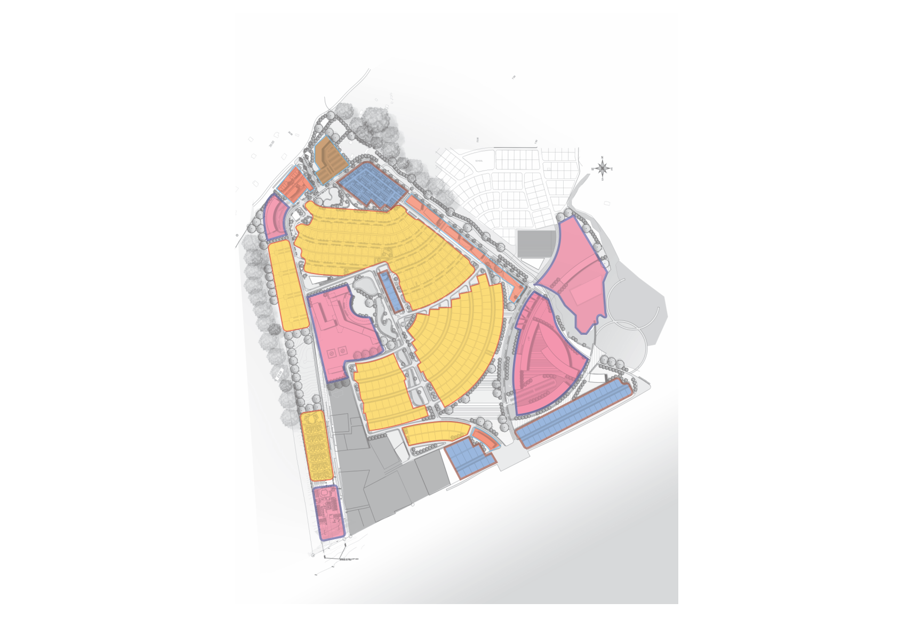
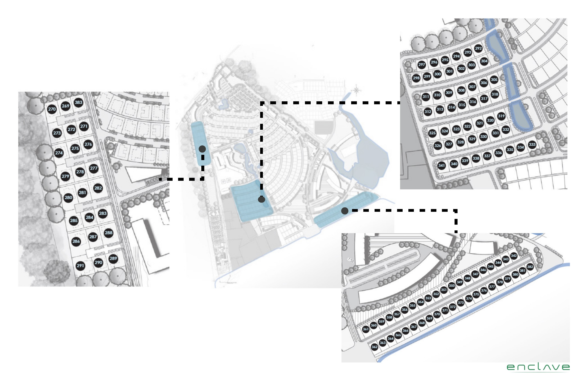
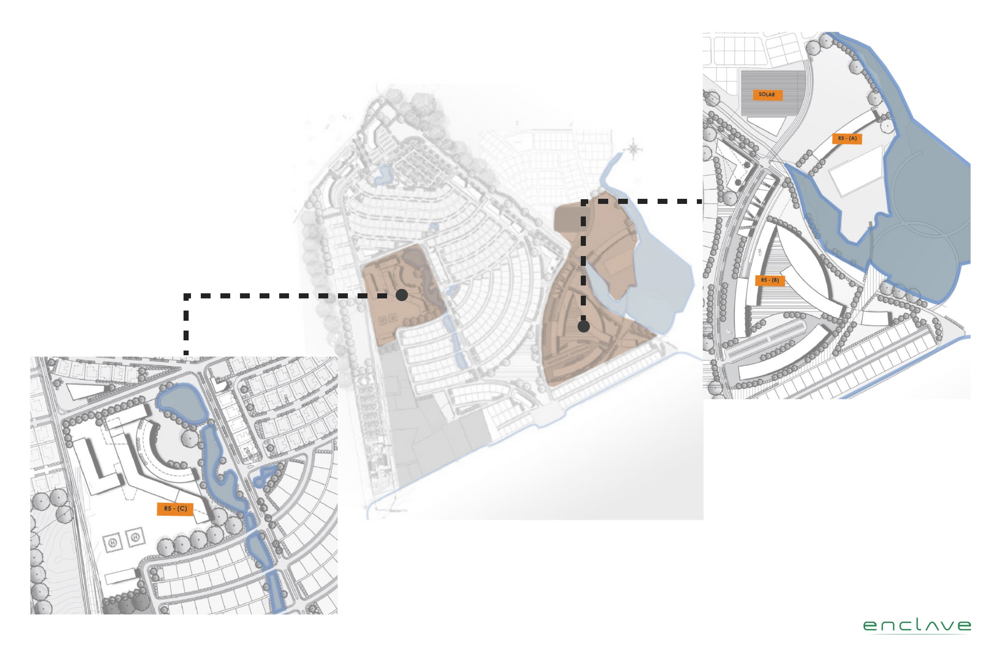
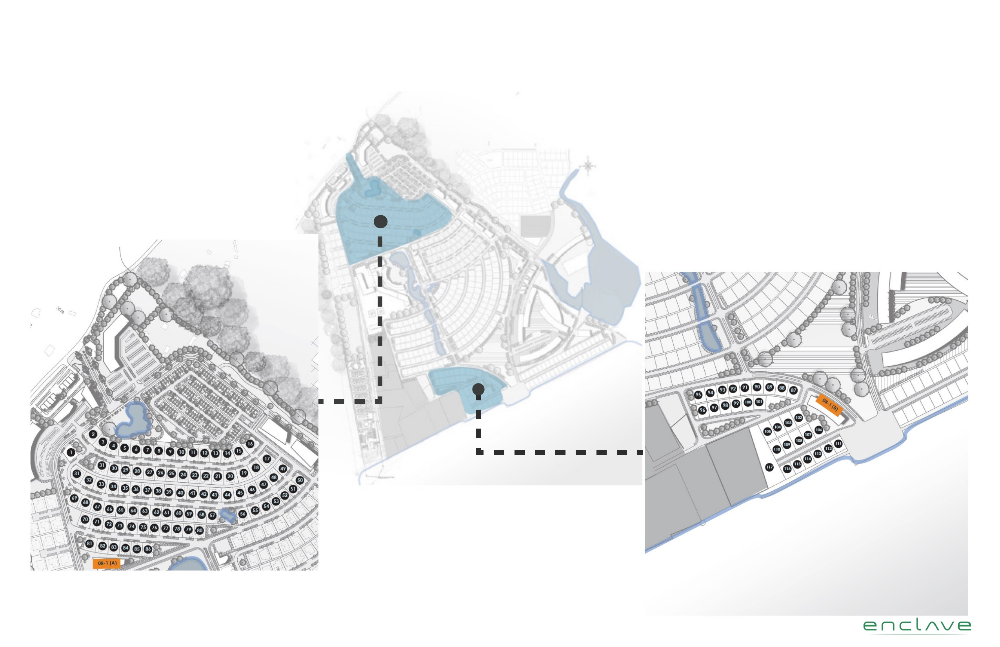
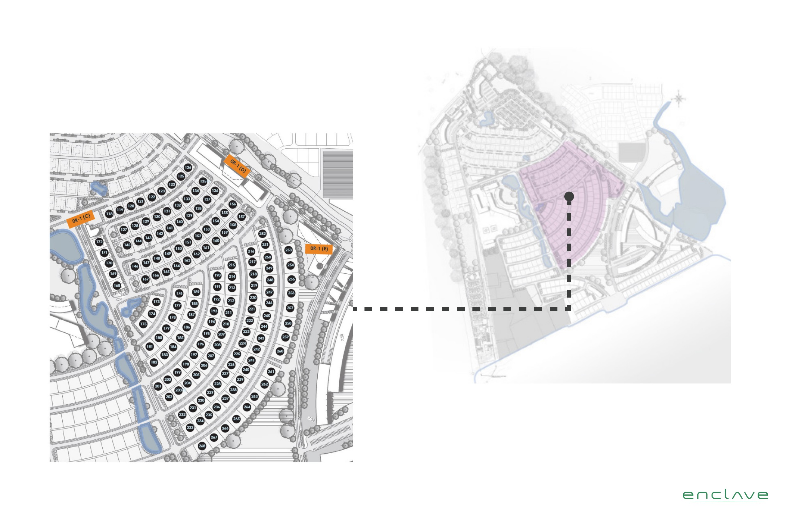
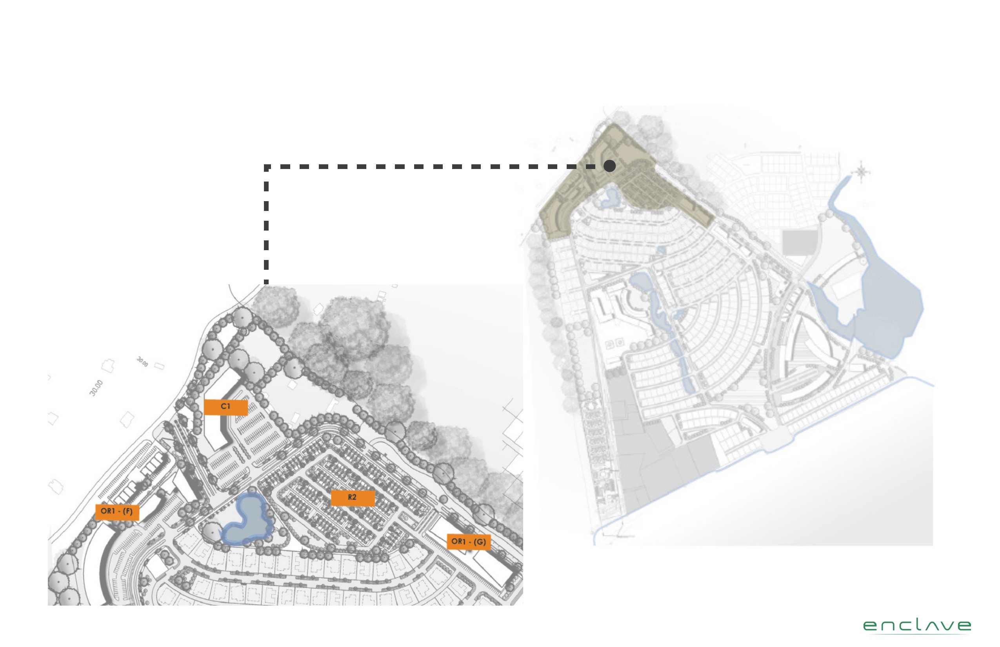

The
Masterplan
A carefully considered land-use plan designed to integrate beachfront living, working waterfront, sustainable green space, and connected infrastructure across 267 acres on the Gulf of Guinea coast.
A Blueprint for
Coastal Community Living
267 acres of prime beachfront and hilly ocean-side land on the Gulf of Guinea coast in Nyanyano, Gomoa Fetteh — developed into 396 mixed-use serviced plots for sale across five phases. The site is approximately 75 minutes from Accra, accessible by the N1 highway from Accra to Cape Coast.
The land contains a lagoon, with a 1-mile shoreline and approximately 1.2 miles of ocean frontage. Upon completion, the 267 acres will comprise 169 acres of serviced plots, 50 acres of road, 46 acres of green spaces, and 2 acres of beachfront walkway — alongside a future 18-hole golf park and well-designed communal infrastructure including streets, lighting, drainage, cycle lanes, and pavements.
Request Full Masterplan Brief267 Acres, Drawn in Detail
Every district, boulevard, lagoon corridor, and beachfront promenade is mapped. 1-mile shoreline. 1.2 miles of ocean frontage. A future 18-hole golf park. All within 75 minutes of Accra via the N1 highway.

The Enclave, Gomoa Fetteh P.U.D. Site Masterplan. Pink: Residential Districts • Blue: Commercial & Mixed-Use • Teal: Waterfront & Lagoon • Green: Landscape & Public Space
The Plan, Layer by Layer
Each planning layer reveals how the site is organised, from green corridors and water features to roads, pedestrian paths, and zone designations.

Green & Ecological Corridors
27% of The Enclave's land area is dedicated to parks and gardens — designed to encourage exercise, social activities, and foster well-being within the community. Coupled with the Dawa Lagoon on-site and a 1.2-mile beach shoreline, the development is positioned to become one of the most desirable and well-designed communities on the coast of West Africa.
- 27% of land area dedicated to parks & gardens
- Dawa Lagoon integrated as ecological & community asset
- Reduces heat-island effect, water run-off & noise pollution
- Supports physical health, community growth & crime prevention
Built to Last
Connected, resilient infrastructure underpins every aspect of the masterplan, from roads to utilities to digital connectivity.
Roads & Circulation
A hierarchical road network separating vehicular and pedestrian movement, with dedicated cycling lanes, clear signage, and logical entry and exit control points.
Connected Utilities
Reliable electricity, potable water, wastewater treatment, stormwater drainage, and digital fibre infrastructure designed for long-term community performance.
Security & Access Control
Gated access points, perimeter security, CCTV coverage, and access management systems designed to deliver safety without sacrificing openness in public zones.
Solar Energy Farm
A dedicated 5-acre solar farm with two sub-stations provides renewable energy infrastructure for the entire community — powering The Enclave sustainably for generations.
Development in Five Phases
267 acres developed across five carefully sequenced phases, completed over 40 months of construction.
Residential Foundation
The anchor residential community — 115 serviced plots on the Eastern corner of the development, between the Dawa Lagoon and the Atlantic Ocean.
Plot Breakdown
- 101 single-family plots (R1) — Plots 269–383
- 14 low-density multi-family plots (R2)
- 24 hillside R1 plots overlooking Akuapem ranges
- 50 R1 plots adjacent to Phase 4
Land Allocation
- 21 acres residential land
- 10.5 acres road network (~1.3km)
- 5 acres landscaping
- 2 acres beachfront area
Character
These lots form the anchor to the residential community for the entire development. R2 multi-family plots sit at the Eastern corner between the Dawa Lagoon and the Atlantic Ocean — the most premium beachfront position in the masterplan.

Lots 269–383 • 38.5 Acres • 115 Serviced Plots
Resort & Commercial Core
Three large high-density tracts forming the hospitality, entertainment, and commercial heart of The Enclave, with a 5-acre solar energy provision.
Plot Breakdown
- R5-A — 14.5 acres (Dawa Lagoon frontage)
- R5-B — 27.8 acres (Dawa Lagoon frontage)
- R5-C — 21.7 acres (behind Phase 1 R1 plots)
Designed For
- Hotels & branded residences
- Apartments & continuing care (CCRC)
- Retail & entertainment districts
- Auditoriums, playgrounds & water parks
Sustainability
5 acres dedicated to a solar farm with two sub-stations, providing renewable energy infrastructure for the entire community.

R5-A · R5-B · R5-C • 64.5 Acres • 3 Serviced Plots
Hillside & Shoreline Living
119 serviced plots across hillside, beachfront, and mixed-use positions, with a full 5km road network, security perimeter, and two gated access points.
Plot Breakdown
- 102 single-family plots (R1) — Plots 1–117
- 15 low-density multi-family (R2) — shoreline direct access
- OR1-A — hillside mixed-use (office & residential)
- OR1-B — beachfront mixed-use retail
Land Allocation
- 26.8 acres residential land
- 18 acres road network (~5km)
- 10 acres landscaping
Infrastructure
Security fence wall with 2 gated access points. OR1-B targets beachfront retail — small to mid-scale restaurants, cafes, and gift shops with direct beach access.

Plots 1–117 · OR1-A · OR1-B • 54.8 Acres • 119 Serviced Plots
Ocean-Proximity Residential
The largest residential phase — 154 plots with closer ocean proximity than Phase 3, 15 plots with water pond adjacency, and community-focused mixed-use.
Plot Breakdown
- 151 single-family plots (R1) — Plots 118–268
- OR1-C, OR1-D, OR1-E — mixed-use plots
- 15 plots with direct water pond access
- All R1 plots: 5–10 mins walk to ocean
Land Allocation
- 36.4 acres residential land
- 21.8 acres road network (~3km)
- 12 acres landscaping
Mixed-Use Targets
OR1 plots targeted at day-care centres, farmers' markets, grocery stores, restaurants, apartments, and fitness centres — everyday amenities serving the full community.

Plots 118–268 · OR1-C · OR1-D · OR1-E • 70.2 Acres • 154 Serviced Plots
Commercial Village & Final Buildout
Five plots completing the masterplan vision — a commercial anchor on the main road, townhouses, high-density residential, and the highest-terrain mixed-use positions.
Plot Breakdown
- R2 — row-houses & duplex townhouses
- R5-D — high-density multi-family
- C1 — commercial (Gomoa Fetteh–Nyanyano Road)
- OR1-F & OR1-G — mixed-use, highest terrain
Land Allocation
- 20.1 acres developable land
- 19 acres landscaping
- Main road direct access frontage
Commercial Anchor
C1 plot targeting major supermarket retailers (Melcom, Palace, ShopRite) on the main Gomoa Fetteh–Nyanyano Road, providing community-scale retail for residents and the surrounding area.

C1 · R2 · OR1-F · OR1-G • 39.1 Acres • 5 Serviced Plots